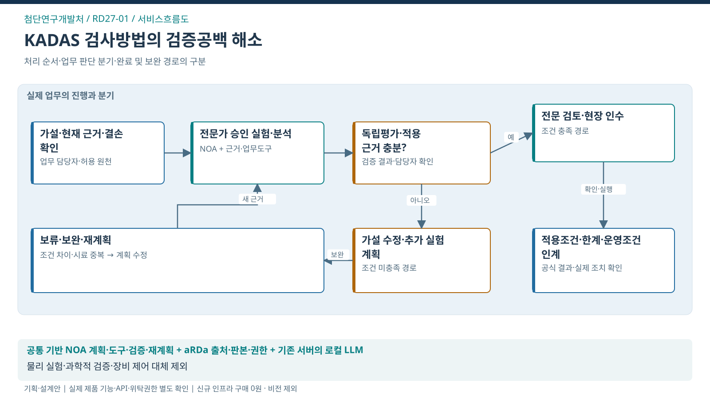

첨단연구개발처 / SERVICE FLOW
KADAS 검증공백을 줄이는 연구과업 수행 지원
검사방법의 검증공백 해소와 현장 이관에 필요한 입증근거 확보

처리의 대상
가설–차량/시료–실험–분석판본
업무 전환
목표 판별상태·현재 근거·경쟁 가설을 구성 → 자료 결손·다음 실험 후보와 우선 근거 제안 → 전문가가 승인한 분석 요청과 반환 결과 검증 → 가설 수정·독립평가·검사방법 인수조건 연결
완료의 기준
적용조건·측정법·검증결과·한계·운영조건을 갖춘 검사방법 인수자료가 전문 검토됨
이 서비스의 법정업무 기반
첨단연구개발처와 연결된 업무
법적 수행범위에서 출발하는 AX 제안
연결은 소관·예산권의 확정과 구분
- 자동차 정기·종합검사 ↗지정에 따른 검사대행
문제 근거와 기대편익
업무 근거: TS 공개업무 안내
해결할 문제 가설: 검증한 조건과 현장 적용조건이 달라 추가 실험·근거 판단의 공백이 남을 수 있음
수혜자: 향후 검사 이용자·검사기술 운영부서
기대효과: 기관 — 추가 검증의 우선순위·재현·인수근거 명확화 / 국민 — 충분한 검증근거를 갖춘 검사방법의 적용
확인 지표: 중요 검증공백 해소·재현 성공·평가자료 혼입·인수 보완
기준값·목표 개선율: 현업 실증으로 확정
전문가 역할·제외범위·검증조건
전문 판단·실행: 연구자의 실험 수행과 독립 평가자의 과학적 검증·인수 검토
이번 과업 제외: 새 장비·비전모델 개발, 물리 실험 자동제어, 검사방법의 과학적 검증 대체, 독립 R&D 사업 편성
선행 확인: 기존 평가기능 1개·확인조건 1~2개·허용된 결과자료
제품 역할은 적용안. TS 설치·성능·현업 효과의 검증 완료와 구분.